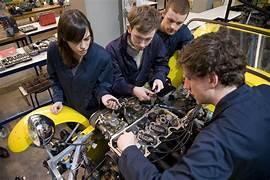
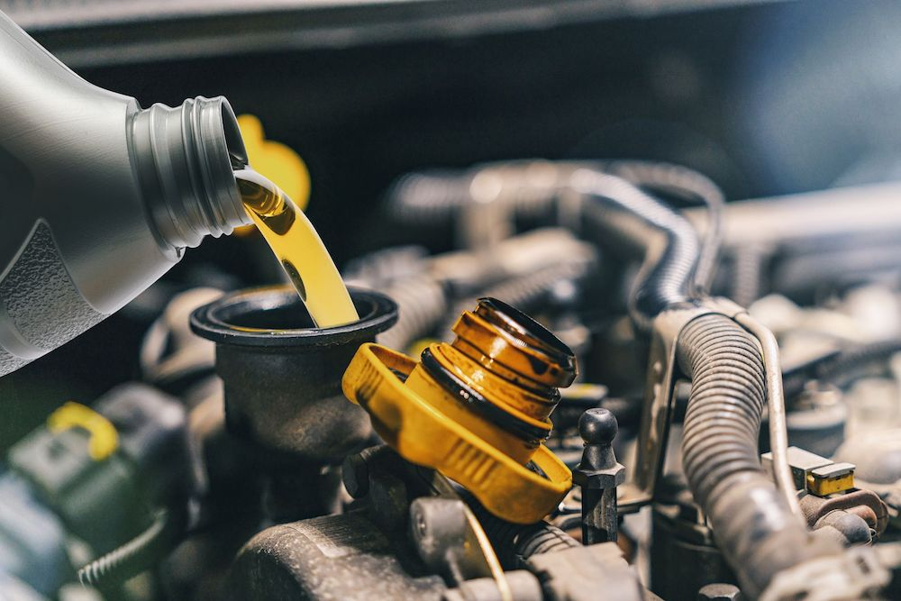
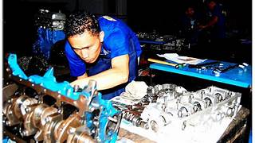

Mechanic class is cool because it teaches you about working with tools and cars also it's a good skill to learn.
You will have to change oil in a lawn mower and learn more about how to do it also learn more about how the tools work.
You learn how to do pretty much everything that is apart of mechanics.
I am Santino Martinez and i chose mechanics because i like to work on cars. And I think you should study in mechanics class because it's a good thing to learn let's say your car broke down and needs repairs done and if You lean mechanics you will know how to fix your car.